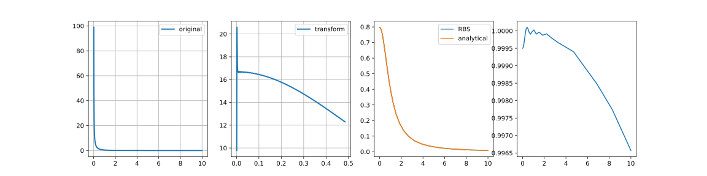

Note
Go to the end to download the full example code
Ogata Fourier transform

/home/runner/work/jaxrts/jaxrts/doc/examples/utils/plot_ogata.py:101: RuntimeWarning: divide by zero encountered in divide
f = lambda r: 1 / r * (np.exp(-r)) # noqa: E731
/home/runner/work/jaxrts/jaxrts/doc/examples/utils/plot_ogata.py:84: RuntimeWarning: invalid value encountered in multiply
r, fvals * np.sqrt(rvals), bounds_error=False, fill_value=(np.nan, 0.0)
t= 1.113969326019287 s
/home/runner/work/jaxrts/jaxrts/doc/examples/utils/plot_ogata.py:101: RuntimeWarning: divide by zero encountered in divide
f = lambda r: 1 / r * (np.exp(-r)) # noqa: E731
t= 0.007147073745727539 s
t= 0.006540536880493164 s
t= 0.006307840347290039 s
t= 0.006197929382324219 s
t= 0.006118059158325195 s
t= 0.0061528682708740234 s
t= 0.0060732364654541016 s
t= 0.0060253143310546875 s
t= 0.005968332290649414 s
import time
from functools import partial
import hankel
import jax
import jax.numpy as jnp
import matplotlib.pyplot as plt
import numpy as np
import scipy
@jax.jit
def psi(t):
return t * jnp.tanh(jnp.pi * jnp.sinh(t) / 2)
@jax.jit
def dpsi(t):
res = (jnp.pi * t * jnp.cosh(t) + jnp.sinh(jnp.pi * jnp.sinh(t))) / (
1 + jnp.cosh(jnp.pi * jnp.sinh(t))
)
return jnp.where(jnp.isnan(res), 1.0, res)
@jax.jit
def bessel_3_2(x):
return jnp.sqrt(2 / (jnp.pi * x)) * (jnp.sin(x) / x - jnp.cos(x))
@jax.jit
def bessel_0_5(x):
return jnp.sqrt(2 / (jnp.pi * x)) * jnp.sin(x)
@jax.jit
def bessel_neg0_5(x):
return jnp.sqrt(2 / (jnp.pi * x)) * jnp.cos(x)
@jax.jit
def bessel_2ndkind_0_5(x):
return (
bessel_0_5(x) * jnp.cos(0.5 * jnp.pi) - bessel_neg0_5(x)
) / jnp.sin(0.5 * jnp.pi)
def fourier_transform_ogata(k, rvals, fvals, N, h):
# Get N zeros of Bessel function of order 1/2
r_k = jnp.arange(1, N + 1)
y_k = jnp.pi * psi(h * r_k) / h * k
f_int = jnp.interp(
y_k / k,
rvals,
fvals * jnp.sqrt(rvals),
left=jnp.nan,
right=0.0,
period=None,
)
dpsi(h * r_k)
w_k = bessel_2ndkind_0_5(jnp.pi * r_k) / bessel_3_2(jnp.pi * r_k)
series_sum = (
jnp.pi * w_k * f_int * bessel_0_5(y_k) * dpsi(h * r_k) * (y_k / k)
)
res = jnp.nansum(series_sum) / jnp.sqrt(k)
return res
def fourier_transform_hankel(rvals, fvals, N, h):
f_interp = scipy.interpolate.interp1d(
r, fvals * np.sqrt(rvals), bounds_error=False, fill_value=(np.nan, 0.0)
)
k = np.logspace(-3, 1, 500)
# Ht = HankelTransform(nu=0.5,N=N,h=h)
Ft = hankel.SymmetricFourierTransform(ndim=3, N=N, h=h)
fhat = Ft.transform(f_interp, k, ret_err=False) # / np.sqrt(k)
return k, fhat
r = np.linspace(0.0, 10, 1000) # Define a physical grid
# k = np.logspace(-3,2,100) # Define a spectral grid
# f = lambda r : np.exp(-r**2 / 2)
f = lambda r: 1 / r * (np.exp(-r)) # noqa: E731
# f_aux = lambda r: f(r)
# Sample Function
k, transform = fourier_transform_hankel(
r, f(r), 10000, 0.001
) # Return the transform of f at k.
# f_fft_analy = 1 / k**2 + 1 / (k**2 + 1)
# h_opt = hankel.get_h(
# f = f, nu=2,
# K= np.array([1E-3, 1E2]),
# cls=hankel.SymmetricFourierTransform
# )
fig, ax = plt.subplots(ncols=4, figsize=(16, 4))
ax[0].plot(r, f(r), linewidth=2, label="original")
ax[0].grid(True)
ax[0].legend(loc="best")
pref = 1
# transform =
ax[1].plot(k, transform, linewidth=2, label="transform")
# ax[1].plot(k, f_fft_analy, label = "analytical")
k = np.logspace(-3, 1, 50)
# f_fft_analy = np.exp(-(k)**2/2)
f_fft_analy = jnp.sqrt(2 / jnp.pi) * (1 / k**2) / (k**2 + 1) * k**2
for _i in range(10):
t0 = time.time()
f_fft = jax.vmap(
partial(fourier_transform_ogata, rvals=r, fvals=f(r), N=250, h=0.0001)
)(k)
print("t=", time.time() - t0, "s")
# ax[1].plot(r, f_fft_fft, label = "inverse")
ax[2].plot(k, f_fft, label="RBS")
ax[2].plot(k, f_fft_analy, label="analytical")
# dr = r[1] - r[0]
# dk = jnp.pi / (len(r) * dr)
# k_lustig = jnp.pi / r[-1] + jnp.arange(len(r)) * dk
# ax[2].plot(k_lustig, hnc.sinft(r * f(r)) * 4 * jnp.pi / k_lustig)
ax[1].grid(True)
# ax[1].set_xlim(0,0.125)
ax[1].legend(loc="best")
ax[2].legend(loc="best")
# ax[1].set_xlim(0, 100)
# ax[1].set_ylim(0, 1.1)
# ax[0].set_xlim(0, 100)
# ax[0].set_ylim(0, 1.1)
# ax[2].plot(transform / f_fft_analy)
# ax[2].set_ylim(0, 100)
ax[3].plot(k, (f_fft / f_fft_analy))
# print(fourier_transform_ogata(0.1, r, f(r), 1000, 0.005))
plt.show()
Total running time of the script: (0 minutes 2.540 seconds)